A real exchange.
Built to be understood.
EduMatcher is a complete trading venue — matching engine, auctions, risk controls, clearing, market data, audit trail and six browser applications — written in readable Python, so you can run it, watch it and take it apart.
curl -fsSL https://raw.githubusercontent.com/johan162/EduMatcher/main/deployment/curl/install.sh | bashEducational on purpose.
Not a toy by any measure.
Most teaching exchanges are a single script with a sorted list. EduMatcher is the opposite: the whole venue, as separate processes talking over real protocols — with the books and tooling to learn every part of it.
Made to be read
- Plain Python — no C extensions in the matching path, no magic; step through any order in a debugger.
- 9 books from a no-finance-needed primer to protocol specifications and a guided code tour.
- 29-chapter training guide with hands-on exercises, plus slide decks for instructors.
- An exchange that trades itself — 100 AI traders keep 300 symbols alive for your class.
- Observable by design — every process logs, every event is on the bus, every fill is audited.
Built like a venue
- Multi-process ZeroMQ architecture — engine, gateways, clearing, audit, statistics, scheduler, monitor.
- Full order set — market, limit, stop, stop-limit, trailing stop, IOC/FOK, iceberg, combo, OCO, mass quotes.
- Auctions & risk — opening/closing auctions, price collars, circuit breakers with collar expansion, kill switch.
- Real interfaces — text, binary, market-data, post-trade, REST and WebSocket protocols.
- Operations — health monitor, audit replay, persistence and recovery, containers, one-line install.
The one honest difference: it is written in Python. It will not rival C++ and FPGA venues on raw speed — and that is exactly why you can read it.
Every part of a real exchange,
as its own process
A brokerless ZeroMQ bus ties them together. The engine is the only process that binds sockets; everything else — gateways, clearing, audit, market data — is just a client of the bus, exactly like the colocated services of a production venue.
Trade it. Watch it.
Operate it.
Six browser applications and a full set of terminal tools all talk to the same running exchange. Place an order in one — see it on the others within a second.
A real trading workstation
Candles, a live depth ladder, an order ticket with eight order types and a blotter — plus market-maker quote management and, for operators, halts, circuit breakers and the kill switch.
- Market, limit, stop, stop-limit, FOK, iceberg, IOC, trailing stop
- Role-based screens: trader, market maker, admin
- API-key login; talks to the exchange over REST + WebSocket
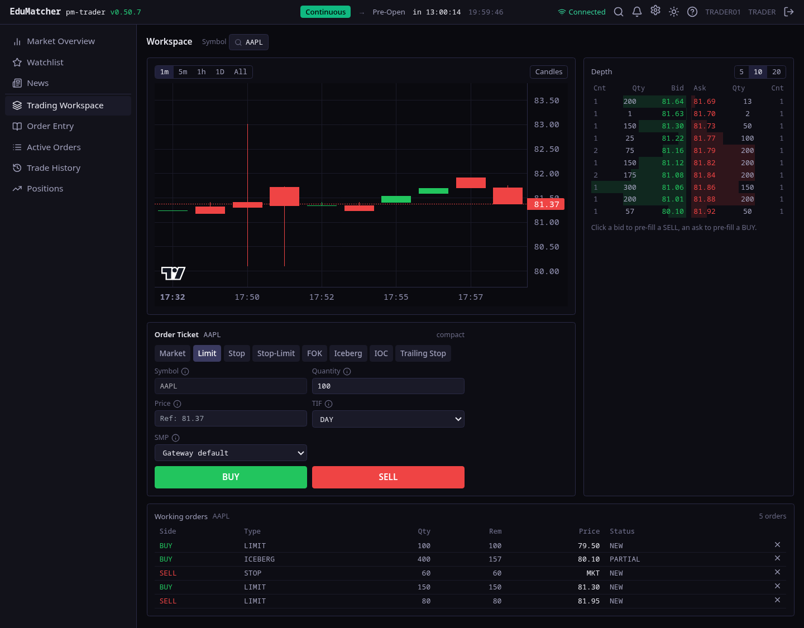
TapeDeck: the classroom wallboard
All 300 symbols in a live market overview, plus symbol detail, index, tape, movers, session status with halts and auction results, and the news feed.
- Read-only — safe to put on a projector
- Live CALF market-data feed, sequence-aware
- Auction equilibrium prices and halts at a glance
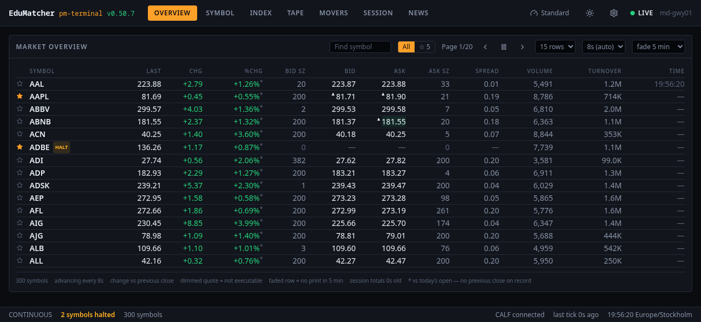
Order Book Viewer
One symbol, every price level: bids, asks, depth bars, the trade tape and session OHLC. Watch an iceberg refill or an auction uncross as it happens.
- Full depth with order counts per level
- Trade tape with aggressor colouring
- The browser companion to
pm-viewer

Operator Dashboard
The exchange's vital signs: process health, CPU, memory, loop lag, orders and trades per minute, reject ratio and participant connectivity.
- Every process with sparkline CPU and RSS
- Engine P99 latency and throughput
- Drill into a process for its recent history

Log Operator Console
Every process ships structured logs to a central server. Search, filter, follow live, acknowledge alerts and inspect connections and diagnostics — the answer to “why was my order rejected?”.
- Live tail with level and text filters
- Alerts you can acknowledge
- Connection and health views
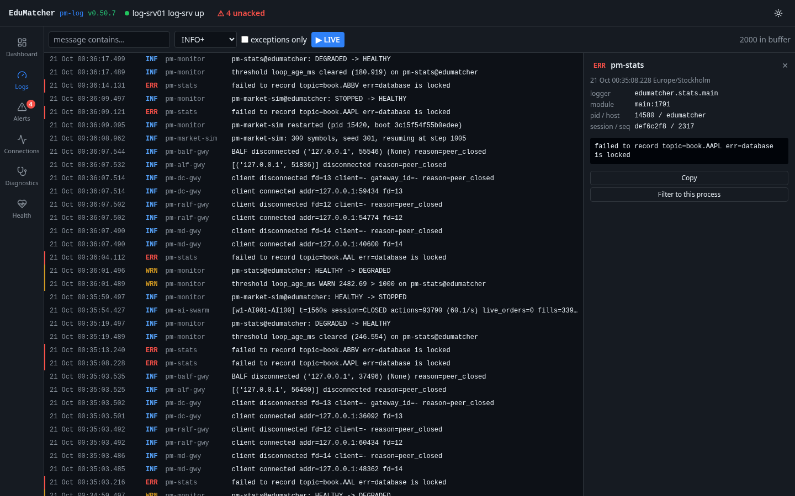
Configuration Builder
Design a whole venue with forms instead of YAML: symbols and reference prices, sessions and holidays, risk collars, circuit breakers, market makers, indices — validated as you type.
- Live diagnostics and an export gate
- Import, review and diff existing configs
- Light and dark themes
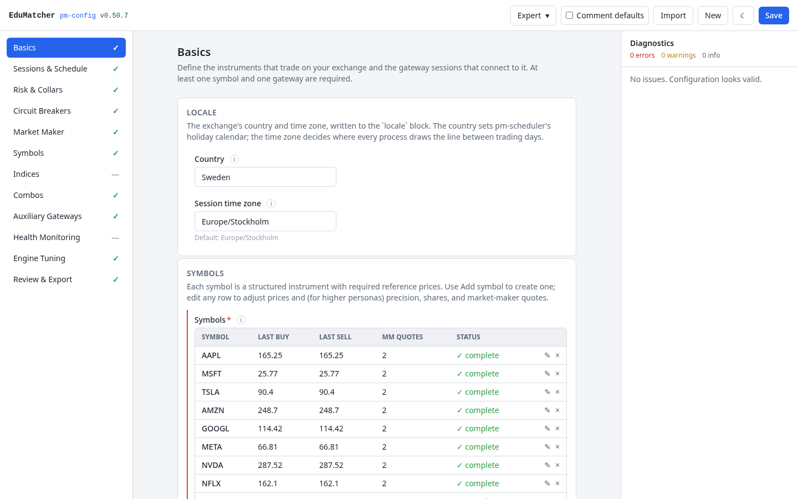
Follow one order
through the venue
A NEW order is parsed by a gateway, risk-checked, matched with price-time priority, and then fanned out on the bus to clearing, audit, statistics, market data and every screen you have open.
- Heaps and price-level indexes with lazy deletion — complexity documented for every operation
- Pre-trade collar and circuit-breaker checks in the hot path
- Every step observable: topics, acks, fills, rejects
A market with
nobody at the desks
An empty exchange teaches nothing. EduMatcher ships a simulation: 100 AI traders, each with a simple rule of its own, trade 300 symbols all day — chasing a hidden true value that jumps when news breaks and wobbles when rumours spread.
- Value investors, trend followers, noise traders, news reactors
- Public headlines, secret values — price discovery you can watch
- One container, runs for weeks, accelerated time for lectures
The unglamorous parts, too
The parts of an exchange nobody puts on a brochure are the parts that make it real.
Order book & matching
Price-time priority, partial fills, iceberg refills, stop triggers in deterministic order, self-match prevention, amend semantics that respect priority.
Sessions & auctions
A scheduler with holiday calendars drives pre-open, opening auction, continuous trading, closing auction and close. Equilibrium-price uncrossing with imbalance.
Risk controls
Static and dynamic price collars, three-level market-wide circuit breakers, automated collar expansion on reopening, kill switch and mass cancel.
Market makers
Two-sided quotes and a bundled market-maker bot keep books liquid; quote management lives in the Trading GUI.
Clearing, P&L & audit
Positions and P&L per participant, a durable audit trail of every event, and a replay tool to re-run history against the engine.
Indices & statistics
A real-time cap-weighted index, session statistics in SQLite, movers, tape and news — all published to external consumers over CALF.
Protocols & APIs
ALF text and BALF binary order entry, CALF market data, RALF post-trade, LALF logging, DC1 drop-copy, plus a documented REST and WebSocket API.
Health & observability
Every process emits a heartbeat beacon; the monitor derives health, lag and alerts. Central structured logging feeds the console.
Deploy anywhere
One-line container install, a pinned-release VM image, or pipx install edumatcher. Multi-host ready: internal bus on loopback, gateways on the network.
Fast for Python.
Open about the rest.
EduMatcher does not try to match NYSE or LSE. It was measured, though — with price-collar and circuit-breaker checks switched on, because those are what a real engine pays for.
Mix: 20 % market, 30 % aggressive limit, 50 % passive limit. engine-only, risk checks enabled (price collar + circuit breaker), high-end Linux server. Bars are for visual scale only.
9 books. One exchange.
Start with How an Exchange Works if markets are new to you, then pick the book that matches what you want to do. Every book is on the web and downloadable as PDF and EPUB.
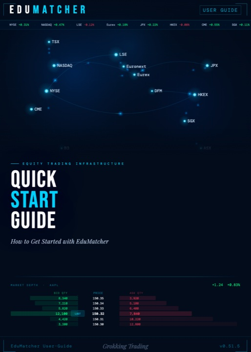
Quick Start Guide
Install, first trade, a full trading day and your own configuration — a checkpoint at every step.
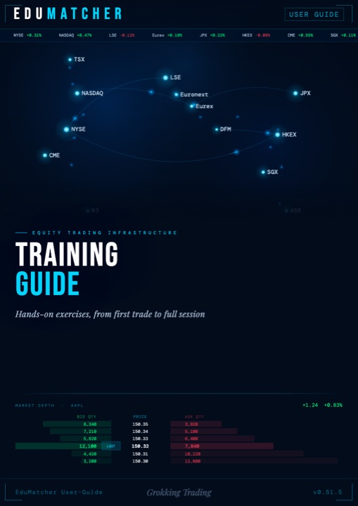
Training Guide
29 hands-on chapters: order types, auctions, market making, risk, clearing, protocols.
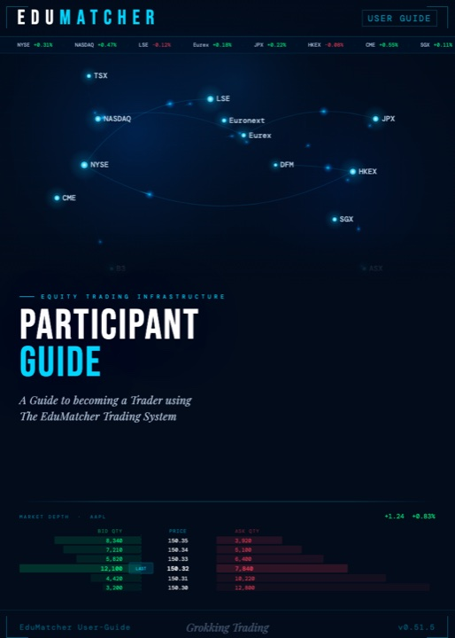
Participant Guide
The order book, every order type, auctions, market making, bots, P&L and the trading screens.
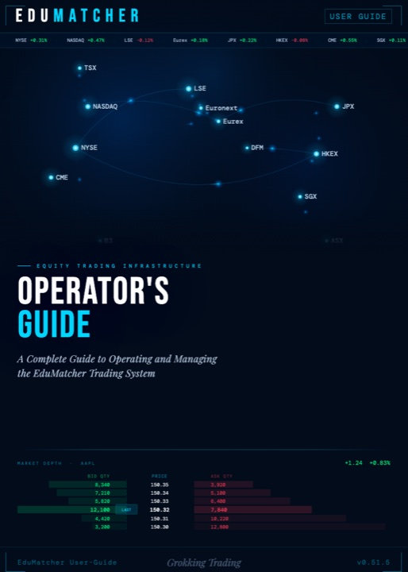
Operator's Guide
Install, configure, run, supervise and recover an exchange — gateways, risk, audit, persistence.
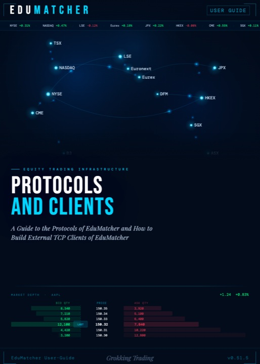
Protocols and Clients
ALF, BALF, CALF, RALF, LALF and REST/WebSocket — specifications, sessions and client examples.
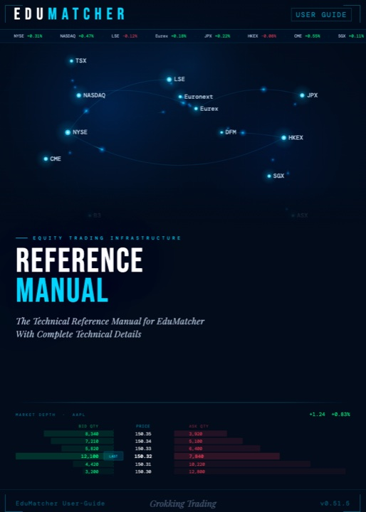
Reference Manual
Every command, port, configuration field and a finance glossary.
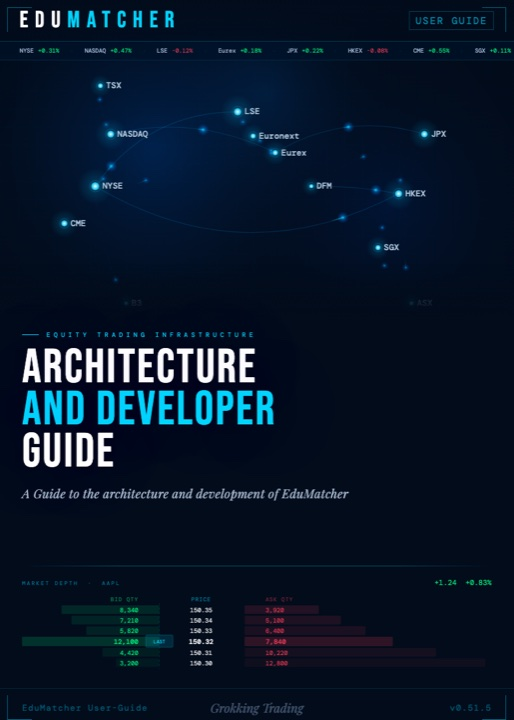
Architecture & Developer Guide
The design, the data structures, the code tour and how to change it with confidence.
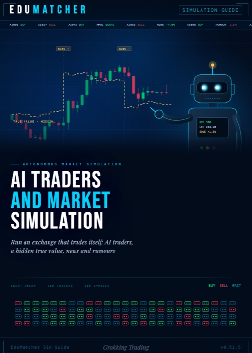
AI Traders & Market Simulation
An exchange that trades itself: AI traders, hidden true values, news and rumours.
Start your own exchange
in the next five minutes
One command, a running venue, six web apps. Fork it, break it, extend it — the whole source is on GitHub.